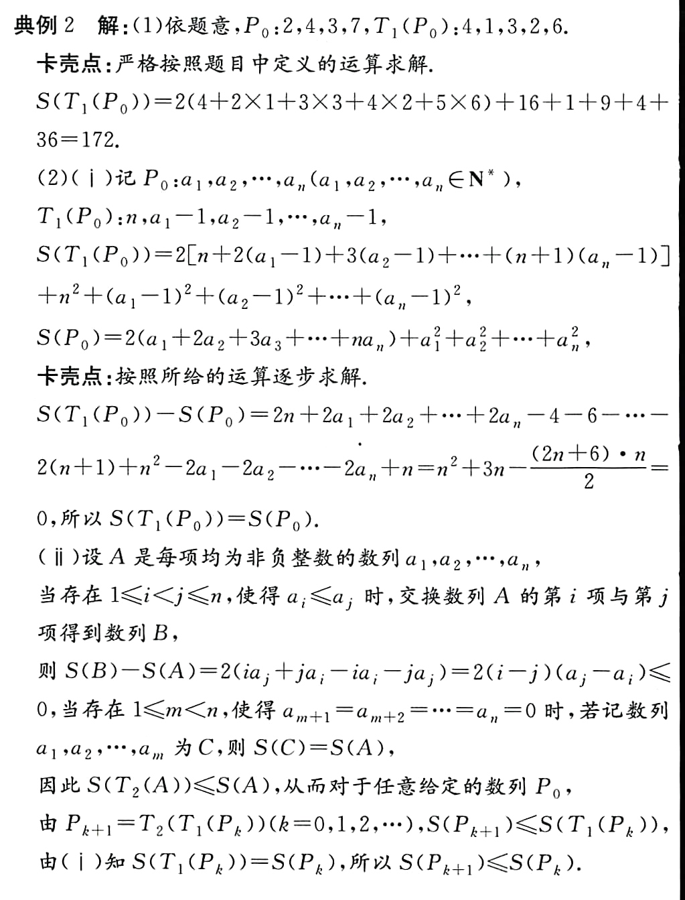
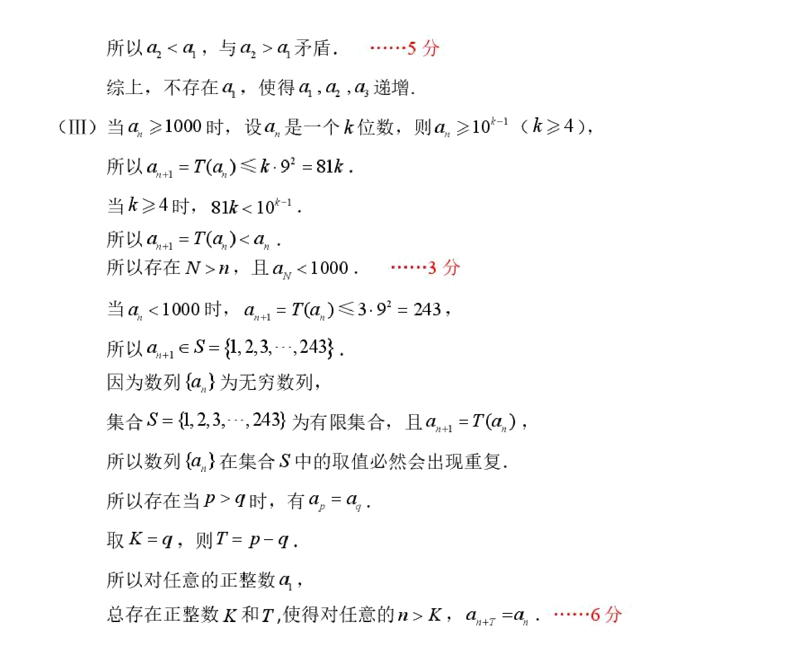

（2024·徐州模拟）对于每项均是正整数的数列 \(P:a_1,a_2,\cdots,a_n\)，定义变换 \(T_1\)，\(T_1\) 将数列 \(P\) 变换成数列 \(T_1(P):n,a_1-1,a_2-1,\cdots,a_n-1\)。对于每项均是非负整数的数列 \(Q:b_1,b_2,\cdots,b_m\)，定义 \(S(Q)=2(b_1+2b_2+\cdots+mb_m)+b_1^2+b_2^2+\cdots+b_m^2\)，定义变换 \(T_2\)，\(T_2\) 将数列 \(Q\) 中的项从大到小排列，然后去掉所有为零的项，得到数列 \(T_2(Q)\)。
（1）若数列 \(P_0\) 为 \(2,4,3,7\)，求 \(S(T_1(P_0))\) 的值。
（2）对于每项均是正整数的有穷数列 \(P_0\)，令 \(P_{k+1}=T_2(T_1(P_k))\)，\(k\in\mathbb{N}\)。
（i）探究 \(S(T_1(P_0))\) 与 \(S(P_0)\) 的关系；
（ii）证明：\(S(P_{k+1})\leq S(P_k)\)。
(1) \(T_1(P_0):4,1,3,2,6\),\(S(T_1(P_0))=2(1\times 4+2\times 1+3\times 3+4\times 2+5\times 6)+4^2+1^2+3^2+2^2+6^2=2\times 53+66=172\)
(2)(i)
\[\begin{gathered} S(T_1(P_0))\\=2[n+2(a_1-1)+3(a_2-1)+...+(n+1)(a_n-1)]+n^2+\sum_{i=1}^n(a_i-1)^2 \\=2[n-\frac{n(n+3)}{2}]+n^2+n+2(a_1+2a_2+...+na_n)+2(a_1+a_2+...+a_n)+\sum_{i=1}^na_i^2-2(a_1+a_2+...+a_n) \\=2(a_1+a_2+...+a_n)+\sum_{i=1}^na_i^2 \\=S(P_0) \end{gathered}\]
(ii)
由(i)知:\(S(T_1(P_0))=S(P_0)\),只能是\(T_2\)导致了\(S\)变小:
下面证明:\(S(T_2(A))\lt S(A)\).
\(T_2\)操作不会改变平方和的大小,但是让大的数放到了前面,拥有了较小的系数;让小的数放到后面,拥有了较大的系数,相当于变成了较小的逆序和.
>[!TIP] 注意\(T_2\)的操作顺序 >将数列 \(Q\) 中的项从大到小排列，然后去掉所有为零的项
虽然先去零和先排序最后的结果是一样的,但是这个先后顺序可以辅助我们书写过程.

答案还算比较正常,相当于证明了排序不等式
为什么先去零书写更加困难?因为如果先去零,假如中间有0,那么\(S\)的值可能会改编.而先排序使得0都在末尾,去零不影响\(S\).
最后再加一问,来自于2026北京二中高二(下)四学段段考:
(III)证明:对于任意给定的每项均为正整数的有穷数列\(A_0\),存在正整数\(K,\text{当}k\ge K\text{时,}S(A_{k+1})=S(A_k)\)
>[!TIP] >考虑S的有界性,单调性与离散性
（21）(2025大兴)（本小题15分）
对于正整数 \(n\)，定义 \(T(n)\) 为 \(n\) 的各位数字的平方和. 已知无限数列 \(\{a_n\}\) 满足：\(a_1\) 为正整数，且对于任意的 \(n \in \mathbb{N}^*\)，\(a_{n+1} = T(a_n)\).
（I）若 \(a_1 = 2\)，求 \(a_2,a_3,a_4,a_5\) 的值；
（II）若 \(a_1\) 是一个三位数，是否存在 \(a_1\)，使得 \(a_1,a_2,a_3\) 递增？若存在，求出所有满足条件的 \(a_1\) 的值；若不存在，说明理由；
（III）证明：对任意的正整数 \(a_1\)，总存在正整数 \(K\) 和 \(T\)，使得对任意的 \(n > K\)，\(a_{n+r} = a_n\).

两道题的(III)如出一辙,都利用了离散性与有界性,留给读者自行思考.